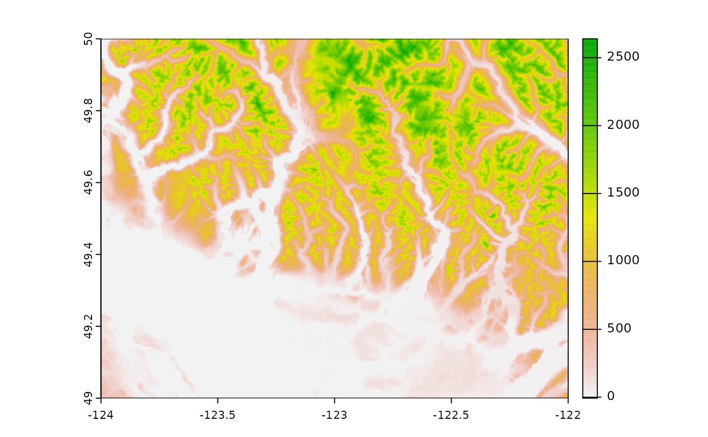

Download British Columbia Digital Elevation Model data
The province of British Columbia has two digital elevation model
(DEM) datasets available
on their website for download. The 25m resolution gridded Canadian
Digital Elevation Data (CDED) format DEM is free, but it’s fairly complicated to
get user-friendly data - the user must first determine which DEM map
tile they wish to download, download each strip of the tile as a zipped
file, unzip all the strips, and stitch the strip together into a single
usable DEM raster file. The BC_DEM() function automates
this entire process for you. Simply specify the map tile you wish to
download and the function will take care of everything else for you.
Determine map tile to download
The map tiles available for download correspond to the BC Maps
& Orthos tiles. At the moment, BC_DEM only supports
downloading one map tile at a time.
BC map tiles available for download
library(MAMU)
# Download Vancouver-area DEM
dem <- BC_DEM("92g",
save_output = FALSE)
#> Stitching together your DEM...
terra::plot(dem)